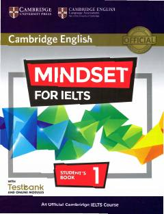

MFIELTS imtihoniga tayyorlanish uchun mo'ljallangan rasmiy o'quv qo'llanma.
Ushbu kitob IELTS imtihoniga tayyorlanayotgan talabalar uchun mo'ljallangan rasmiy o'quv qo'llanmadir. Unda o'qish, yozish, tinglash va so'zlashuv ko'nikmalarini rivojlantirishga qaratilgan turli mavzular va mashqlar jamlangan.